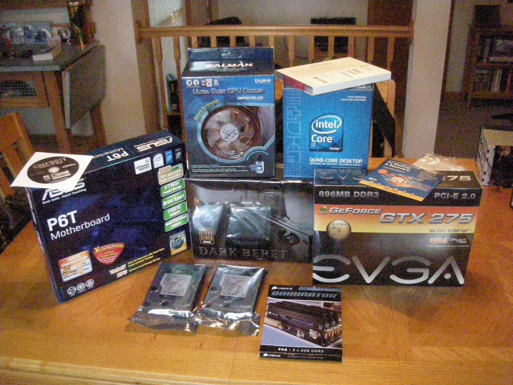
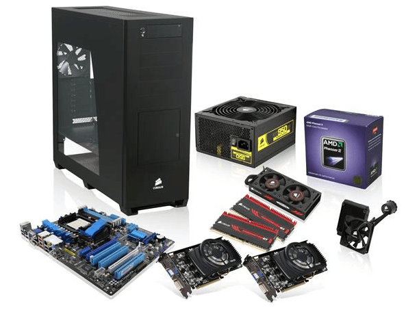

Homepage | Tournament | Virginia | Gordon Ramsay | PC Parts | Music
 
A custom-built or homebuilt computer is a computer assembled from available components, usually commercial off-the-shelf (COTS) components, rather than purchased as a complete system from a computer system supplier.
I find researching various PC parts and comparing the cost efficiency of them to one another very interesting. I frequent websites and online forums for PC building to spread my knowledge or learn from others.